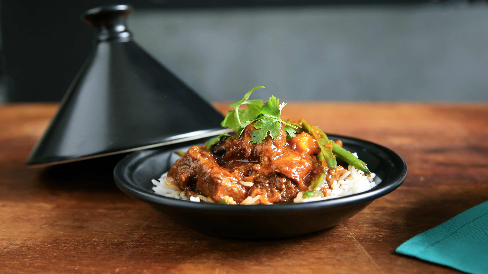
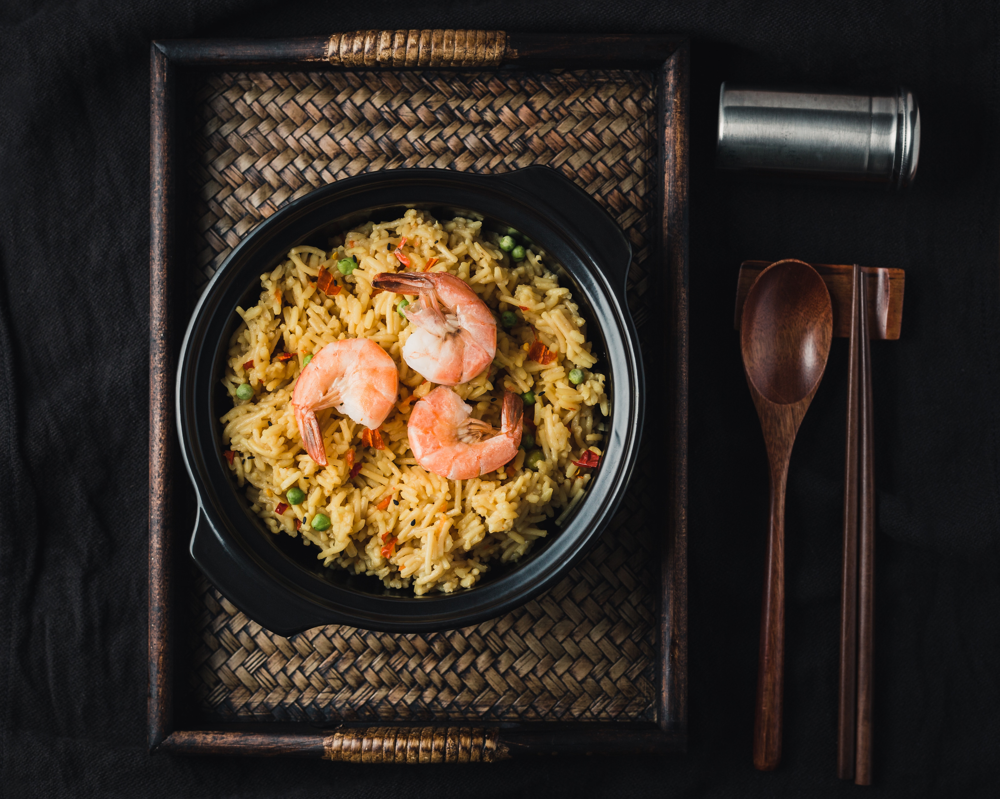

MAIN DISHES

Rice Stew
One thing is certain - Nigerians love rice! That is why one of their most popular dish is a variations of rice and and vegetable stew with spices like ginger and curry.

Coconut fried rice
Simple yet delicious dish of creamy riced cooked in coconut milk along with added vegetables is match made in heaven.